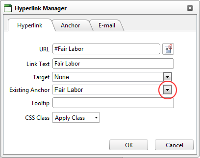

Adding an Anchor Link
How to create a link to an anchor using the DotNetNuke.RadEditorProvider for the RTE.
- Highlight the text/object to be linked to the anchor.
- Click the Hyperlink Manager (CTRL + K)
 button. This opens the Hyperlink Manager with the Hyperlink tab pre-selected.
button. This opens the Hyperlink Manager with the Hyperlink tab pre-selected.
- At Existing Anchor, select the anchor name. This displays the anchor URL in the URL field. E.g. #Fair Labor

- The following optional settings are available:
- In the Link Text text box, enter/edit the linked text as required.
- At Target, select the target for this link - OR - Select None to use the existing window.
- In the Tooltip text box, enter the text to be displayed when a user places their mouse over this link.
- At CSS Class, select the CSS class to use.
- Check
 the Track the number of times this link is clicked check box to enable Link Tracking for this link. The link must be saved before you can view the Tracking tab where tracking information is displayed.
the Track the number of times this link is clicked check box to enable Link Tracking for this link. The link must be saved before you can view the Tracking tab where tracking information is displayed.
- Check the Log the user, date and time for each click check box to also enable the Link Log.
-
Click the OK button confirm.
Related Topics: